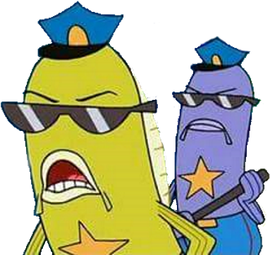
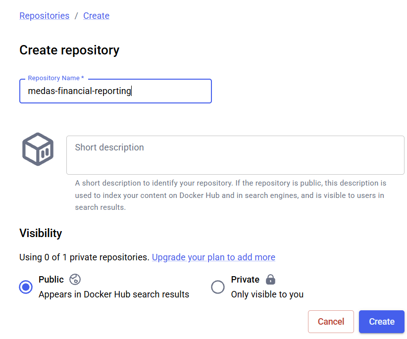
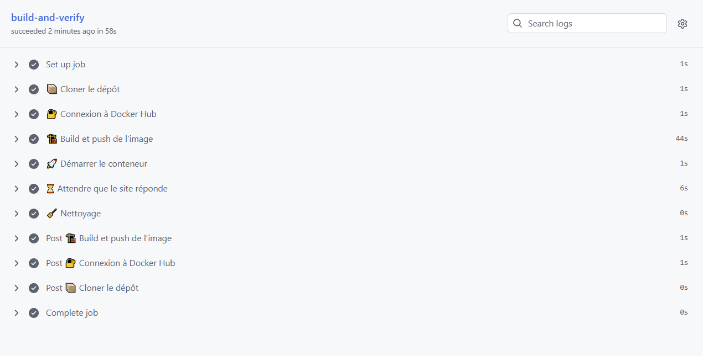

flowchart TD
A[Modifier le Dockerfile] --> B[Commit et push sur feat-docker]
B --> C[La CI build l'image]
C --> D{Le build réussit ?}
D -->|Non| E[Lire les logs de la CI et identifier l'erreur]
E --> A
D -->|Oui| F[Push de l'image sur DockerHub]
F --> G[La CI démarre le conteneur]
G --> H{Le site répond ?}
H -->|Non| E
H -->|Oui| I[Image valide]
Docker
Une précision avant de commencer. Mon objectif n’est pas de vous apprendre Docker dans son intégralité, le sujet est bien trop vaste pour tenir dans cette section et mériterait un cours à lui seul. Ce que je veux, c’est vous faire manipuler Docker dans un cas concret et utile : conteneuriser notre data product pour le déployer.
TipPour pratiquer Docker
Si le sujet vous intéresse, je vous recommande vivement les guides du labs Docker. Ils sont très intuitifs et construits autour de cas d’usage précis.
Où faire tourner Docker ?
On a un problème : Onyxia ne permet pas d’utiliser des images Docker à la volée dans un pod. Pour itérer avec Docker, nous devons donc nous rabattre sur d’autres solutions. Voici un petit tour d’horizon des options qui s’offrent à nous :
- Docker Desktop installé sur votre machine. C’est la solution la plus complète mais elle suppose de pouvoir installer le logiciel sur votre poste, ce qui n’est pas toujours le cas donc on oublie.
- Le bac à sable Docker(Play with Docker) permettait autrefois de tester en ligne sans rien installer, mais il a été décommissionné.
- LabEX offre un service similaire à Play with Docker mais son temps d’utilisation est trop limité pour notre usage, nous ne nous en servirons donc pas.
À la place, je vous propose une approche un peu différente : utiliser notre propre CI comme banc d’essai et nous adonner à ce qui ressemble à du pur die and retry. On pousse, la CI build, ça casse, on corrige, on repousse, jusqu’à ce que ça passe.
Note
En realité ces étapes d’essais/erreurs seront plutôt invisible pour vous, j’espère bien pouvoir vous donner des consignes assez clairs pour que vous n’ayez pas à subir ça.
Ce qu’on va faire (et ce qu’on ne pourra pas faire)
Le plan est le suivant : construire une image, l’envoyer sur Docker Hub grâce à notre CI et vérifier via cette dernière que l’image build correctement et que le site répond.
Soyons clairs sur les limites de l’exercice : nous ne pourrons pas tester la bonne exécution complète de notre programme de cette façon. La CI nous dira seulement que l’image est valide (elle se construit et démarre), pas qu’elle fonctionne de bout en bout. De toute façon, on le sait dès le départ : tout ne sera pas fonctionnel car rappelez-vous que nous avons fait le choix de ne pas injecter nos credentials MinIO pour des raisons de sécurité. Il faudra donc en monter un nous-mêmes, ce que nous ferons aussi avec Docker mais plus tard.
NoteC’est quoi DockerHub ?
Docker Hub est un image registry (registre d’images) : un espace de stockage en ligne où l’on publie et récupère des images Docker, un peu comme GitHub l’est pour le code source. Quand notre CI aura construit l’image de notre application, elle l’y poussera. N’importe quel environnement capable de tirer une image (votre cluster, un collègue, un serveur) pourra alors la récupérer par son nom. C’est le maillon qui relie la construction de l’image à son déploiement. Pour information, en entreprise vous n’utiliserez que très rarement DockerHub, vous aurez votre propre registry comme Artifactory ou Harbor, peut-être que ces noms vous évoque quelque chose.
TipLes bonnes habitudes
On ne change pas nos habitudes : tout passe par une branche dédiée selon le workflow feat-* → development → main. On crée donc feat-docker depuis development.
git switch -c feat-docker
Le Dockerfile
Créez un fichier nommé Dockerfile à la racine du projet. (le D majuscule est important)
NoteC’est quoi un Dockerfile ?
Un Dockerfile est en quelque sorte une recette : un fichier texte qui décrit, étape par étape, comment construire l’image de votre application. Chaque instruction (FROM, COPY, RUN …) part d’une base et ajoute quelque chose par-dessus.
Chaque instruction crée une layer (couche). Une image Docker est en réalité un empilement de couches, chacune représentant une modification du système de fichiers. L’intérêt : les couches sont mises en cache.
C’est pour ça que l’ordre des instructions compte : on place les étapes qui changent rarement (installation des dépendances) avant celles qui changent souvent (copie du code), pour profiter au maximum du cache et accélérer les builds.
Je vous redirige une fois de plus vers le blog de Stéphane Robert pour en savoir plus
Voir le Dockerfile
# Image de base : Python 3.13 en version slim
FROM python:3.13-slim
# Copie du binaire uv depuis l'image officielle (pas besoin de l'installer à la main)
COPY --from=ghcr.io/astral-sh/uv:latest /uv /uvx /bin/
# Répertoire de travail dans le conteneur
WORKDIR /app
# Copie des fichiers de dépendances d'abord (pour profiter du cache des layers)
COPY pyproject.toml uv.lock ./
# Installation des dépendances (sans les dépendances de dev)
RUN uv sync --frozen --no-dev --no-install-project
# Copie du reste du code source
COPY . .
# Installation du projet lui-même
RUN uv sync --frozen --no-dev
# Création d'un utilisateur non-root et attribution des droits sur /app
RUN useradd --create-home --uid 1000 appuser \
&& chown -R appuser:appuser /app
# On bascule sur cet utilisateur : tout ce qui suit tourne sans privilèges admin
USER appuser
# Port exposé par Streamlit
EXPOSE 8501
# Commande de démarrage : on réutilise notre entrypoint uv
CMD ["uv", "run", "app"]
ImportantSécurité : ne jamais tourner en root
Par défaut, un conteneur Docker exécute son processus en tant que root. C’est pratique mais dangereux : si une faille permet à un attaquant de sortir du conteneur (container escape), il se retrouve avec les pleins pouvoirs sur la machine hôte. Le principe du moindre privilège veut qu’un processus ne dispose que des droits strictement nécessaires à son fonctionnement.
C’est pourquoi nous créons un utilisateur dédié appuser, sans privilèges, et nous basculons dessus avec l’instruction USER avant de lancer l’application. À partir de cette ligne, tout s’exécute sans les droits administrateur. Notre application Streamlit n’a besoin de rien de plus pour tourner, autant ne pas lui donner les clés de la maison.
C’est un réflexe que vous devez intégrer le plus tôt possible : on ne déploie pas un conteneur qui tourne en root.
TipLe .dockerignore, le pendant du .gitignore
Notre instruction COPY . . copie tout le contenu du projet dans l’image. Or beaucoup de choses n’ont rien à y faire : le site Quarto (_site/, pages/, images/), l’environnement virtuel .venv/, les caches, le dossier .git/, les notebooks d’exploration…
On crée donc un fichier .dockerignore à la racine, qui fonctionne exactement comme un .gitignore mais pour Docker : il liste ce qui doit être exclu de l’image. Les bénéfices sont concrets : une image plus légère, des builds plus rapides (moins de fichiers à copier, meilleur usage du cache) et une surface d’attaque réduite puisqu’on n’embarque que le strict nécessaire à l’exécution.
Voir le .dockerignore
# Environnements et caches Python
.venv/
__pycache__/
*.pyc
.pytest_cache/
.ruff_cache/
.coverage
# Site Quarto
_site/
.quarto/
pages/
images/
index.qmd
_quarto.yml
styles.css
# Notebooks
notebooks/
# Git et CI
.git/
.github/
.pre-commit-config.yaml
# Fichiers temporaires et divers
tmp/
.cache/
todo.md
Dockerfile
.dockerignoreLa règle est simple : si ce n’est pas indispensable pour faire tourner l’application en production, ça n’a pas sa place dans l’image.
Automatiser la livraison de l’image docker dans Dockerhub
Comme nous l’avions évoqué, il faut push l’image dans Dockerhub. Nous avons d’abord besoin de créer un compte sur ce dernier pour pouvoir stocker nos images.
CautionÀ vous de jouer
- Se rendre sur
Dockerhubet créer un compte. Il est recommandé d’associer ce compte à votre compteGithub. - Créer un dépôt public
medas-financial-reporting

- Aller dans les paramètres de votre compte et cliquer, à gauche, sur
Personnal access tokens - Créer un jeton personnel d’accès, ne fermez pas l’onglet en question, vous ne pouvez voir sa valeur qu’une fois.
- Dans le dépôt
Githubde votre repo, cliquer sur l’onglet Settings et cliquer, à gauche, sur Secrets and variables puis dans le menu déroulant en dessous sur Actions. Sur la page qui s’affiche, aller dans la sectionRepository secrets - Créer un jeton
DOCKERHUB_TOKENà partir du jeton que vous aviez créé surDockerhub. Valider - Créer un deuxième secret nommé
DOCKERHUB_USERNAMEayant comme valeur le nom d’utilisateur que vous avez créé surDockerhub.
docker.yaml
Maintenant que notre compte DockerHub et notre repo GitHub sont correctement configurés, nous pouvons écrire le mécanisme de build et de push.
Voir le code
name: Docker
on:
push:
branches:
- feat-docker
- development
- main
workflow_dispatch:
jobs:
build-and-verify:
runs-on: ubuntu-latest
steps:
- name: 📦 Cloner le dépôt
uses: actions/checkout@v4
- name: 🔐 Connexion à Docker Hub
uses: docker/login-action@v3
with:
username: ${{ secrets.DOCKERHUB_USERNAME }}
password: ${{ secrets.DOCKERHUB_TOKEN }}
- name: 🏗️ Build et push de l'image
uses: docker/build-push-action@v6
with:
context: .
push: true
tags: ${{ secrets.DOCKERHUB_USERNAME }}/medas-financial-reporting:latest
- name: 🚀 Démarrer le conteneur
run: |
docker run -d --name medas-app \
-p 8501:8501 \
${{ secrets.DOCKERHUB_USERNAME }}/medas-financial-reporting:latest
- name: ⏳ Attendre que le site réponde
run: |
for i in $(seq 1 30); do
if curl -sf http://localhost:8501/_stcore/health; then
echo "Hello there !"
exit 0
fi
echo "Tentative $i : le site ne répond pas encore..."
sleep 2
done
echo "Tout est chaos"
docker logs medas-app
exit 1
- name: 🧹 Nettoyage
if: always()
run: docker rm -f medas-appDéroulons ce que fait ce workflow.
Le bloc on définit les déclencheurs : la CI se lance sur les branches feat-docker, development et main, ainsi que manuellement via workflow_dispatch. Pendant nos itérations, c’est surtout feat-docker qui nous intéresse.
Le job build-and-verify enchaîne ensuite plusieurs étapes. On commence par cloner le dépôt, puis on se connecte à DockerHub grâce à nos deux secrets DOCKERHUB_USERNAME et DOCKERHUB_TOKEN.
Vient ensuite le cœur du pipeline : le build et le push de l’image. L’action docker/build-push-action construit l’image à partir de notre Dockerfile et la publie directement sur DockerHub sous le tag latest.
Les deux étapes suivantes constituent notre smoke test, c’est-à-dire la vérification minimale que nous avions annoncée. On démarre le conteneur en exposant le port 8501, puis on attend que le site réponde : on interroge en boucle l’endpoint de santé de Streamlit (/_stcore/health), jusqu’à 30 fois avec deux secondes de pause. Dès qu’il renvoie une réponse, c’est gagné. Si après une minute il n’a toujours rien renvoyé, on affiche les logs du conteneur pour diagnostiquer et on fait échouer le job.
Enfin, l’étape de nettoyage supprime le conteneur. Le if: always() garantit qu’elle s’exécute même si une étape précédente a échoué, pour ne pas laisser de conteneur fantôme derrière nous.
Pour déclencher ce workflow, il suffit de commit et push votre code. Rendez-vous ensuite dans l’onglet Actions de votre repo : si vous obtenez le même affichage que moi, félicitations, vous venez de décrocher une nouvelle étoile à votre tableau de chasse.
